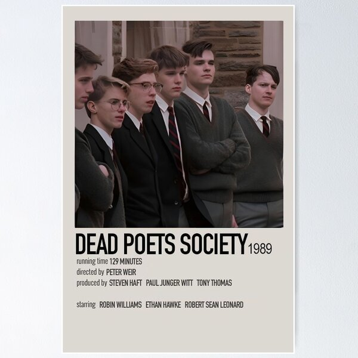

My Favourite Film: Dead Poets Society
Dead Poets Society is my favourite film because it explores themes of individuality, freedom, and the importance of appreciating life. The film encourages viewers to think independently and value creativity.
Film Trailer
IMDb Page
Click the image below to view the film on IMDb:
